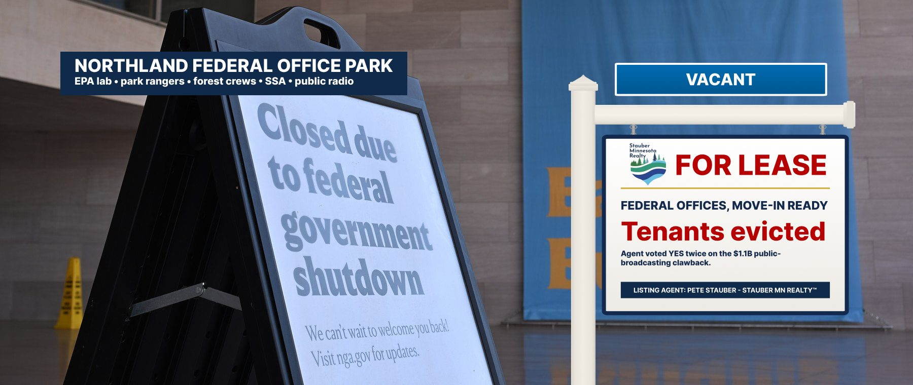

The Northland Federal Office Park — Formerly Occupied by People Who Did Things
Duluth · International Falls · Ely · Grand Marais · Bemidji · Grand Rapids · MN-08
Move-in ready. Previous tenants have been removed.
Now leasing: the Northland Federal Office Park, a portfolio of well-kept public buildings recently vacated by the people who used to work in them. The science lab on Lake Superior. The ranger station at Voyageurs. The Forest Service desks that ran Boundary Waters permits. The Social Security counter. The rural radio stations that broadcast the tornado warnings.
Most evictions were executed by the administration directly, under the banner of the “Department of Government Efficiency.” In January 2025, Agent Stauber endorsed the administration’s federal grant freeze, citing wasteful spending. In August 2026, the Government Accountability Office reported it could not verify 96% of the savings DOGE claimed from canceled grants, and that $27.4 billion in claimed savings were never executed.
One eviction the agent signed personally: the $1.1 billion clawback of public broadcasting. He voted for it twice (Roll Calls 168 & 203). In northern Minnesota, that meant Lakeland PBS in Bemidji lost $1 million — 37% of its budget; WTIP in Grand Marais got about a quarter of its budget from the federal grants; KAXE in Grand Rapids lost about $200,000.
All units are available immediately. Tenants remaining in the building are advised that phone service is limited.
Units now available
| Unit | Status | What changed |
|---|---|---|
| EPA Great Lakes Toxicology & Ecology labDuluth, on Lake Superior | Gutted | 176 federal employees and contractors as of April 2025. Its parent Office of Research and Development was dissolved; about 25 early-career researchers lost funding in May 2025; six employees were put on leave for signing a dissent letter and two were fired. Sen. Tina Smith: “totally unnecessary chaos for the office that is supposed to protect Lake Superior.”Duluth News Tribune; WPR |
| Voyageurs National ParkInternational Falls / Kabetogama | −25% | About a quarter of staff gone (12 full-time positions), including 4 of 7 law-enforcement rangers; emergency services unavailable three days a week; programs canceled.MPR News, Sept. 2025 |
| Superior National ForestDuluth HQ; Ely, Tofte, Grand Marais districts | −100 | Roughly 250 employees, down about 100. Boundary Waters recreation management usually needs 27 people; late last year it had 10 positions.Star Tribune |
| Social Security AdministrationMinnesota field offices | −13% | Minnesota SSA staff down 13% (customer-service staff also −13%) from January 2025 to April 2026; the agency’s workforce is the smallest since 1967. MN-08 has 197,404 beneficiaries.CBPP; SSA |
| Minneapolis VA Health Care SystemRuns VA clinics including Ely | 130 shortages | VA Inspector General: 130 severe occupational staffing shortages (78 clinical). Six Minnesota members of Congress wrote the VA Secretary in Sept. 2025 demanding workforce data. Agent Stauber was not among the signers.Rep. Morrison letter, Sept. 18, 2025 |
| Rural public mediaBemidji, Grand Marais, Grand Rapids, Callaway | Clawed back | Lakeland PBS −$1M (37% of budget); WTIP ~25% of budget from federal grants; KAXE −~$200K (13%); Niijii Radio ~40% of budget. The clawback also ended public-media grants for emergency-alert upgrades.Hubbard School (UMN); Nieman Reports; Route Fifty |
How the building emptied out
Votes from the official House Clerk record.
| Date | Event | Details | Price |
|---|---|---|---|
| Jan 2025 | Freeze | Administration pauses federal grants; Agent Stauber voices support, citing wasteful spending.Wikipedia (Pete Stauber) | — |
| Feb–Mar 2025 | Evictions | Probationary Forest Service and Park Service employees fired nationwide; Superior NF and Voyageurs lose staff. Hundreds rally for the Duluth EPA lab on Congdon Boulevard.Star Tribune; Brainerd Dispatch | — |
| June 12, 2025 | Clawback | House passes the Rescissions Act, 214–212, cutting $1.1B from public broadcasting. Agent Stauber votes YEA.Roll Call 168 | −$1.1B |
| July 18, 2025 | Closed | Final House approval, 216–213. Agent Stauber votes YEA. Signed July 24.Roll Call 203 | Signed |
| July 2025 | Reorganized | EPA dissolves its research office; Duluth lab kept open but folded into other offices. Six Duluth staff placed on leave over a dissent letter; two later fired.Duluth News Tribune; WPR | — |
| Sept 2025 | Vacancy report | Voyageurs down about a quarter of its staff. Minnesota delegation letter on VA vacancies goes out without Agent Stauber’s signature.MPR News; Rep. Morrison | −25% |
| June 2026 | Vacancy report | CBPP: SSA staffing lowest since 1967; Minnesota SSA staff −13%.CBPP | −13% |
| Aug 7, 2026 | Audit | GAO: 96% of DOGE’s claimed grant savings unverifiable; $27.4B in claimed savings never executed. DOGE formally ended July 4, 2026.ABC News on GAO report | 4% verified |
Items the agent would prefer you skip
Seller’s Disclosure Statement
- Did the agent order these layoffs?Most were executive actions. The agent’s role was to support the effort — he backed the January 2025 grant freeze — and to stay off the letters. The public-media clawback, however, required a vote in Congress, and he cast it twice.
- Is the Duluth EPA lab closed?No. It was kept open after its parent office was dissolved, with staff reassigned to other EPA offices. It lost early-career researchers, employees who spoke out, and its place in the agency’s research arm. We list it as “gutted,” not “closed.”
- Why does public radio matter up here?In much of the Arrowhead, cell coverage is spotty and the local public station is how people hear about wildfires, storms and road closures. The clawback also ended federal grants to upgrade public-media emergency-alert systems.
- Did the savings materialize?The GAO could not verify 96% of DOGE’s claimed grant savings and found $27.4 billion in claimed savings that were never executed.
Similar properties in this neighborhood


Public records cited in this listing
- House Clerk, Roll Call 168 (June 12, 2025): Rescissions Act, 214-212; Stauber Yea
- House Clerk, Roll Call 203 (July 18, 2025): final rescissions rule, 216-213; Stauber Yea
- Duluth News Tribune, “Duluth EPA lab to remain open”
- WPR, “EPA workers in Duluth placed on leave after signing letter criticizing Trump policies”
- MPR News, “Voyageurs National Park is down a quarter of its staff after federal cuts” (Sept. 5, 2025)
- Star Tribune, “How will job cuts to federal land agencies affect Minnesota?”
- CBPP, “New Data Show Social Security Staff Cuts Harm Service Delivery in Every State” (June 3, 2026)
- SSA, Congressional Statistics, December 2025 — Minnesota
- Rep. Kelly Morrison et al., letter to VA Secretary Collins on Minnesota VA workforce (Sept. 18, 2025)
- Hubbard School of Journalism (UMN), “Congress cut funding for public media. Here’s how Minnesota stations are responding”
- Nieman Reports, “Rural Stations Seek Support in the Wake of Federal Cuts” (KAXE)
- Route Fifty, “Rescissions mean public media can’t fund warning system grants”
- ABC News, “DOGE’s claim of $110B in savings was vastly inflated and riddled with errors: GAO” (Aug. 7, 2026)
- Wikipedia, “Pete Stauber” (Jan. 2025 grant-pause support)